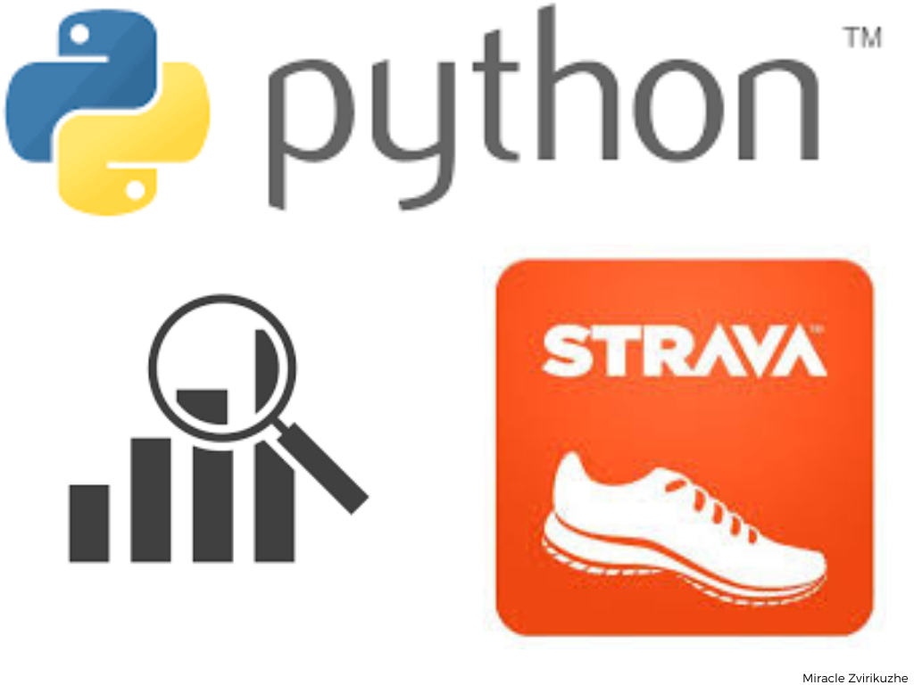
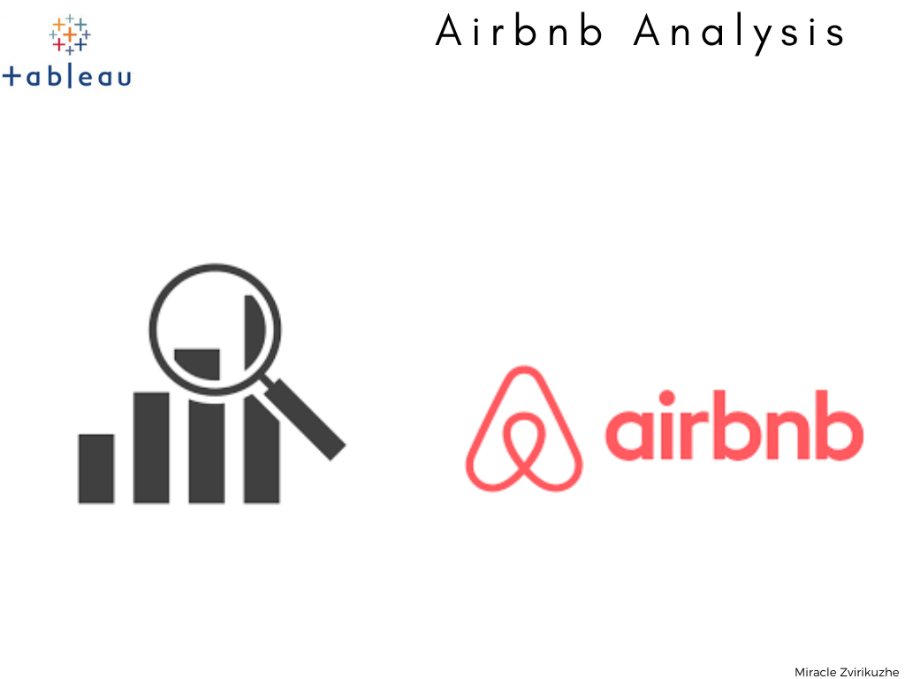

In this project, I acquired my Strava workout data and efficiently imported it into Jupyter Notebooks utilizing the powerful pandas library. With a focus on data wrangling and exploratory analysis, I delved into the dataset to gain valuable insights.
To better understand the patterns and relationships within the data, I generated a range of informative visuals like box plots, bar plots, pair plots, and correlation plots using the seaborn and matplotlib libraries. The combination of these visualization tools allowed me to gain a comprehensive understanding of my running activities and uncover interesting trends in the data.

In this project, I collected data from the Airbnb site specific to Cape Town, comprising 12 months of calendar archives and listing information. To begin, I used Excel to combine and clean the various datasets, ensuring that the tables were ready for analysis. Next, I imported the cleaned data into Tableau Public, where I conducted joins between the listing and calendar data. The join utilized was an inner join based on the listing ID.
With the data prepared and merged, I proceeded to create several insightful visuals that I later combined into a dashboard. The visuals included "Average Price per Neighborhood," "Revenue per Year," "Average Price per Number of Bedrooms," and a map showcasing listings across different neighborhoods and their corresponding average prices. This allowed me to identify which areas were more costly and in higher demand, enabling me to assess the competition.
Furthermore, I generated a count of distinct bedroom listings to gain a better understanding of the distribution of available bedrooms. This comprehensive analysis provided valuable insights into the Airbnb market in Cape Town and helped uncover pricing trends and demand patterns, facilitating better decision-making for future listings.
